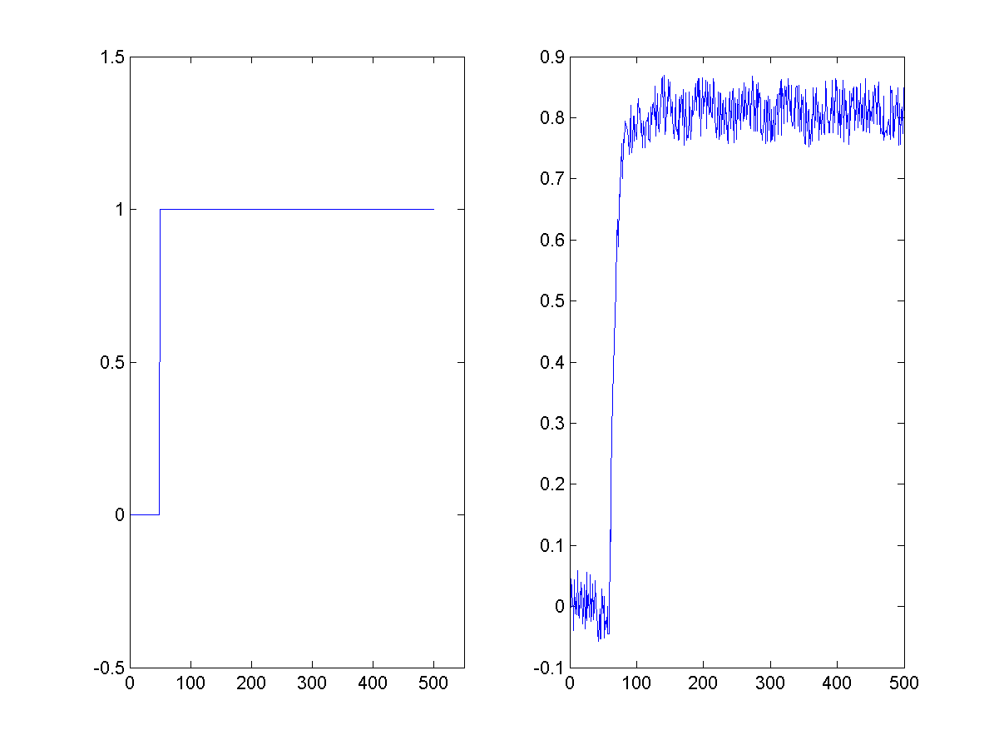
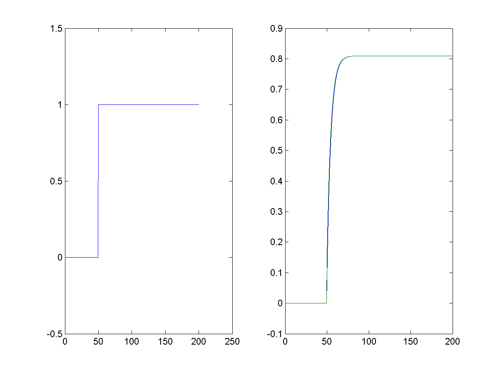
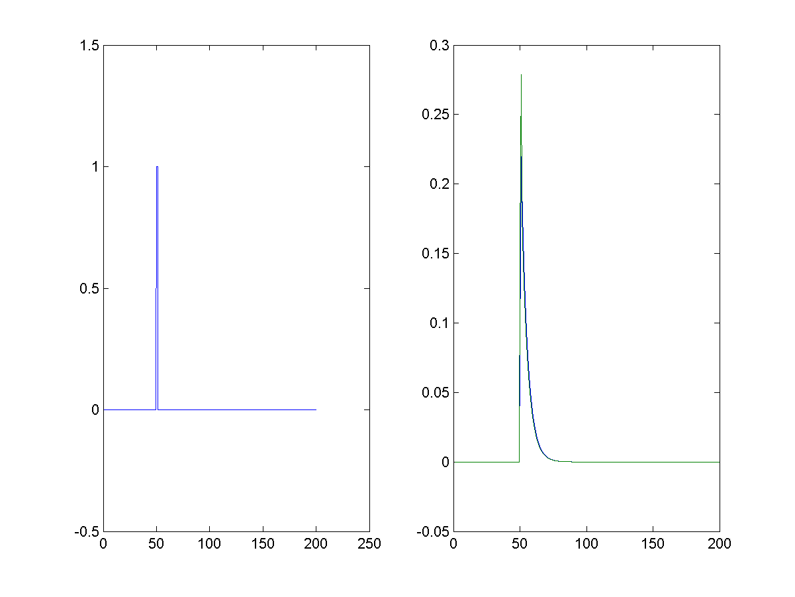
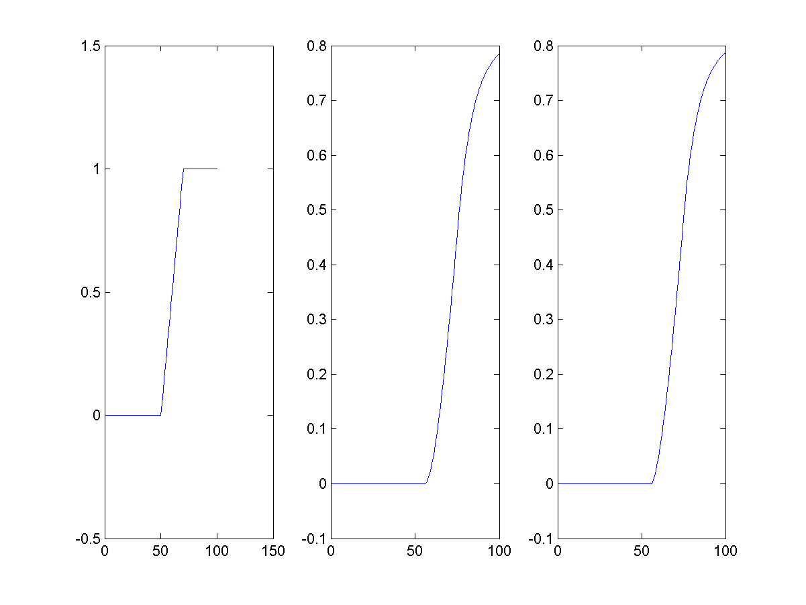

<table align="center"><tr><td width="60"></td><td width="60"></td><td width="60"></td></tr><tr><td>ID by using System :1</td><td> Using Load :1</td><td>Noise Level:0 </td></tr><tr><td></td><td></td><td></td></tr><tr><td>System :1</td><td>Load :1</td><td>ID Method :1</td></tr><tr><td></td><td>Error factor:NaN</td><td></td></tr><tr><td>System :1</td><td>Load :2</td><td>ID Method :1</td></tr><tr><td></td><td>Error factor:NaN</td><td></td></tr><tr><td>System :1</td><td>Load :3</td><td>ID Method :1</td></tr><tr><td></td><td>Error factor:NaN</td><td></td></tr>